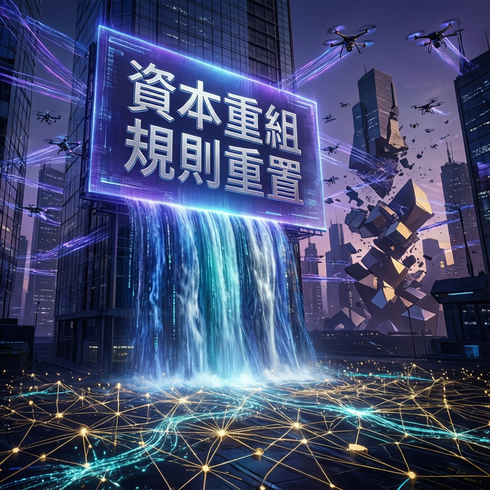

中國人工智能產業歷經激烈競爭後剛形成的市場格局，正面臨資本市場遊戲規則的急劇轉變。本次報告深入解析這場突如其來的產業變局。

中國人工智能產業在歷數年的高速發展與激烈競爭後，各大企業剛剛確立的市場地位與競爭格局，正遭遇資本市場投資邏輯的根本性轉變。研究指出，這一變化不僅影響單一企業的融資能力，更將重塑整個產業的生態結構與發展路徑。
數據顯示，資本市場對AI項目的評估標準已從過往的技術概念與用戶規模，轉向更加務商的盈利能力與商業化落地進度。這一轉變對於尚處於投入期的AI企業而言，意味著前所未有的資金壓力與轉型挑戰。
業界觀察顯示，中國AI產業歷經多輪洗牌後，原本由少數頭部企業領跑的競爭態勢正在發生微妙變化。資本規則的調整使得中小規模的創新型企業獲得了新的發展機遇，同時也讓部分依賴持續融資維持運營的大型平台面臨估值重估的壓力。
專家分析認為，此次資本規則的改變具有深遠的產業影響：
儘管資本環境趨緊，中國AI領域的技術創新步伐並未減緩。研究人員通過大規模數據分析與實驗驗證，在多個關技術方向取得了顯著進展。這些突破為產業的長期健康發展奠定了堅實基礎。
本次報告整理的主要技術進展包括：
資本規則的突變實質上是對中國AI產業發展階段的重新校準。從野蠻生長到精細運營，從概念驅動到價值創造，這一轉型雖伴隨陣痛，卻是產業走向成熟的必經之路。能夠在資金緊縮環境中證明自身商業價值的企業，將在新一輪競爭中佔據更有利位置。
業界觀察人士指出，當前的資本規則調整將對中國AI產業產生持續而深遠的影響。短期內，部分企業可能面臨融資困難與估值下調的挑戰；但從長期視角來看，這一變化有助於淘汰低效競爭、促進資源向優質項目集中，最終推動產業整體質量的提升。
隨著技術不斷完善與商業模式逐步清晰，預計中國AI產業將在製造、醫療、金融、教育等多個垂直領域實現更深層次的滲透與融合。能夠靈活適應資本新規則、快速完成商業化閉環的企業，有望在新一輪產業整合中脫穎而出。